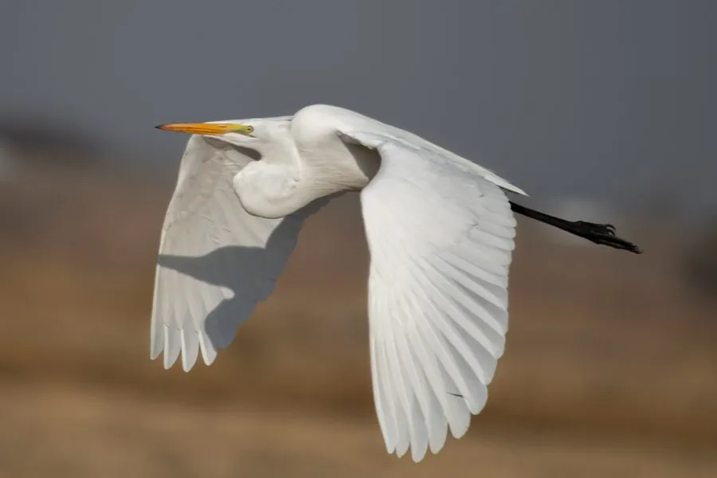

鸟类 · 动物界
大白鹭 Ardea alba

通体雪白的大型涉禽，颈长腿长、喙黄而眼先青绿，繁殖期背部长出蓬松蓑羽，常静立在浅水中伏击鱼虾。
- 分类
- 门脊索动物门纲鸟纲目鹈形目科鹭科属鹭属
- 栖息环境
- 湖泊、沼泽、河滩、稻田、鱼塘与海岸滩涂等浅水湿地
- 地理分布
- 全球温带与热带广泛分布，包括欧亚、非洲、美洲与澳洲
- 保护级别
- IUCN 无危（LC）；中国列为有重要生态、科学、社会价值的陆生野生动物
物种志
大白鹭体形高大，体长 80–104 厘米，翼展约 1.4–1.7 米，体重 0.7–1.5 千克。通体羽毛纯白，颈细长呈 S 形，腿与趾黑色，喙在非繁殖期为黄色，繁殖期转为黑色，眼先裸露皮肤呈青绿色。繁殖期背部与胸前长出细长蓬松的蓑羽，曾因此被大量猎取用于女帽装饰。
大白鹭广布于全球温带与热带湿地，栖息于湖泊、沼泽、河滩、稻田和海岸滩涂，多单独或小群活动。捕食时缓慢涉水或静静站立，靠长而尖的喙突然刺出捕捉鱼、虾、蛙、昆虫和小型哺乳动物，也会跟随耕牛或水禽捡食被惊起的猎物。繁殖期集群筑巢于树上或芦苇丛中，每窝产 2–5 枚卵，双亲共同孵卵约 25 天。它对水质与湿地变化敏感，常被用作湿地环境监测的指示物种。
形态与习性
- 体长约 80–104 cm，翼展 1.4–1.7 m
- 体重约 0.7–1.5 kg
- 食性鱼、虾、蛙、昆虫、蜥蜴与小型哺乳动物
- 繁殖每窝 2–5 枚卵，双亲孵卵约 25 天
- 喙色变化非繁殖期黄色，繁殖期转为黑色，眼先青绿
- 蓑羽繁殖期背胸长出细长蓑羽，曾用于装饰女帽
- 寿命野外约 15 年，最长记录超过 22 年
趣味知识
- 大白鹭捕鱼时能一动不动站上十几分钟，等鱼游到喙边才突然出击。
- 繁殖期它的喙会由黄变黑，眼先变成鲜艳的青绿色。
- 十九世纪末它的蓑羽被大量用于女帽，直接催生了早期的鸟类保护运动。